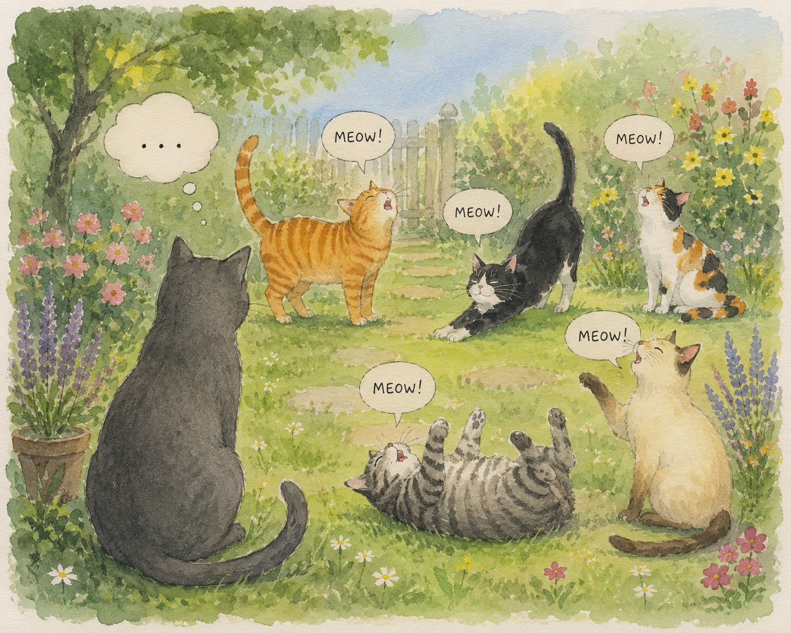
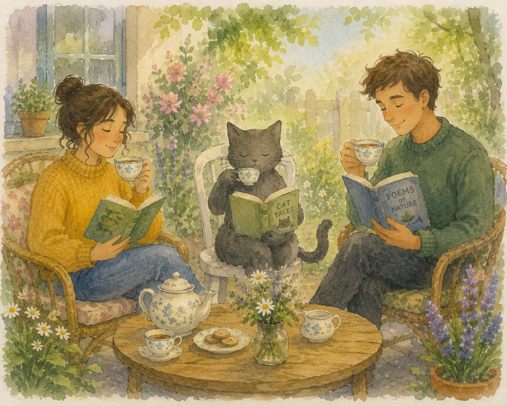
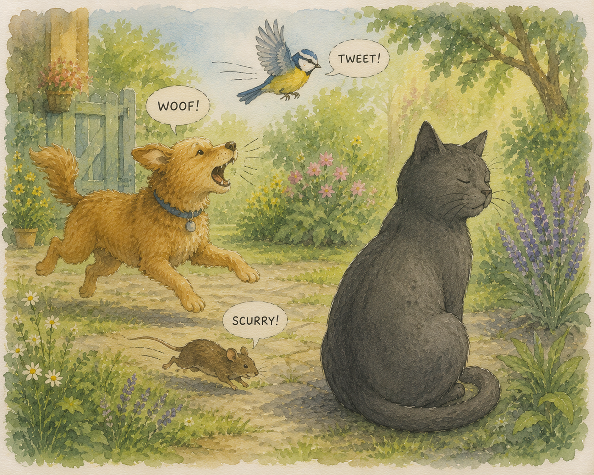
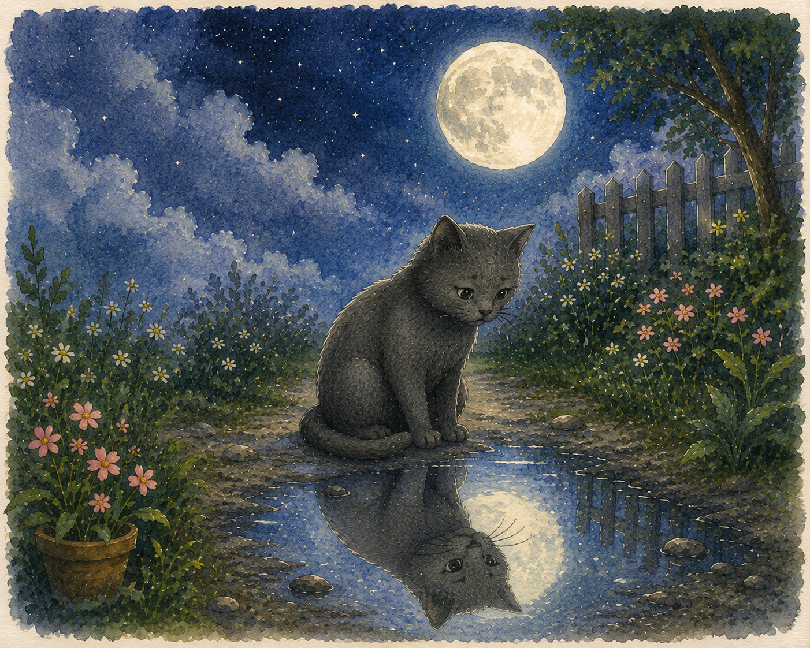
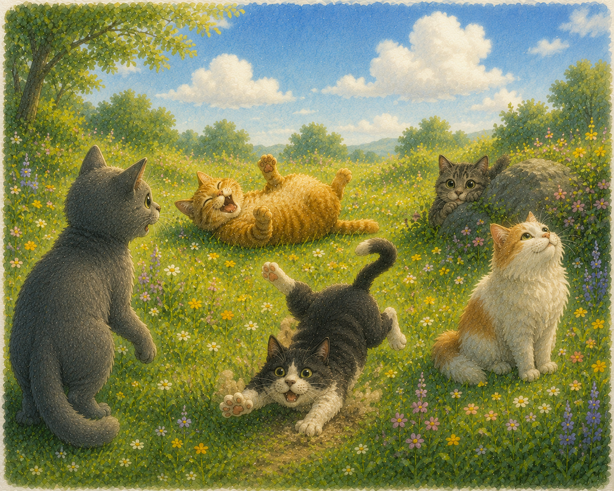
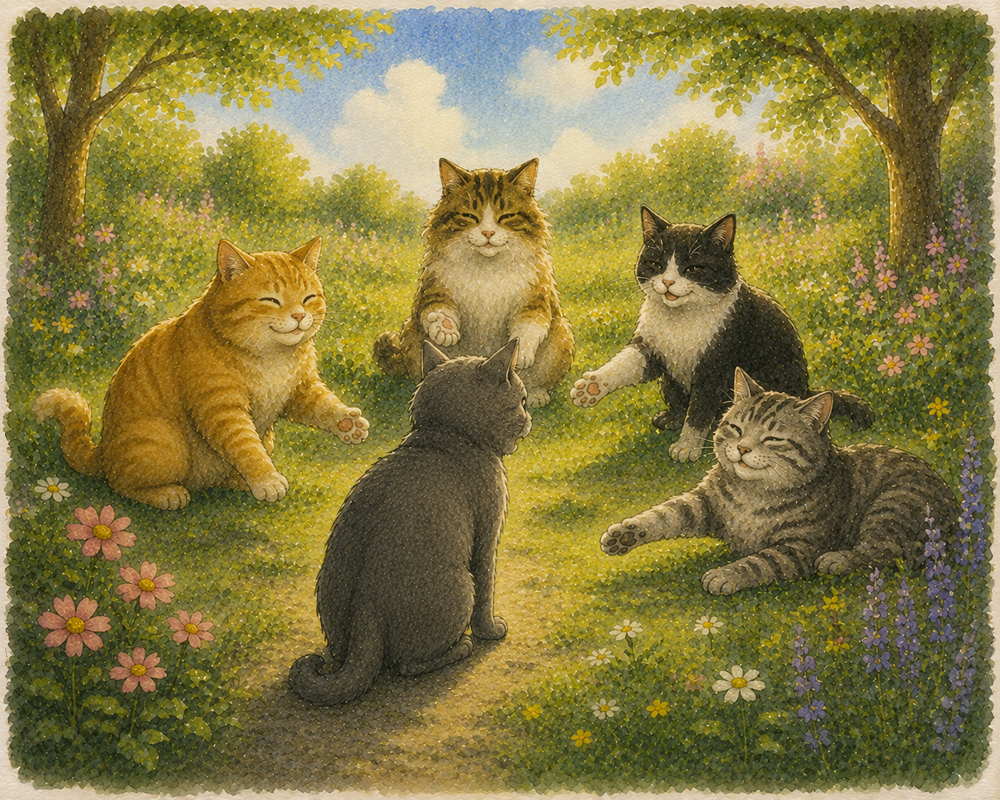
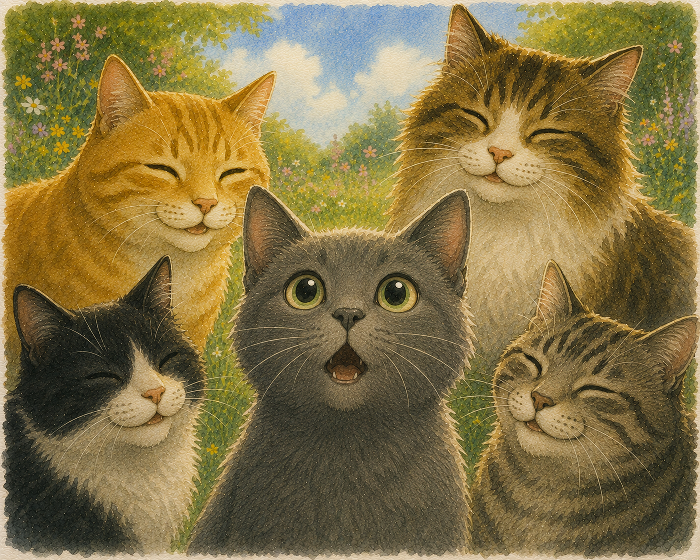
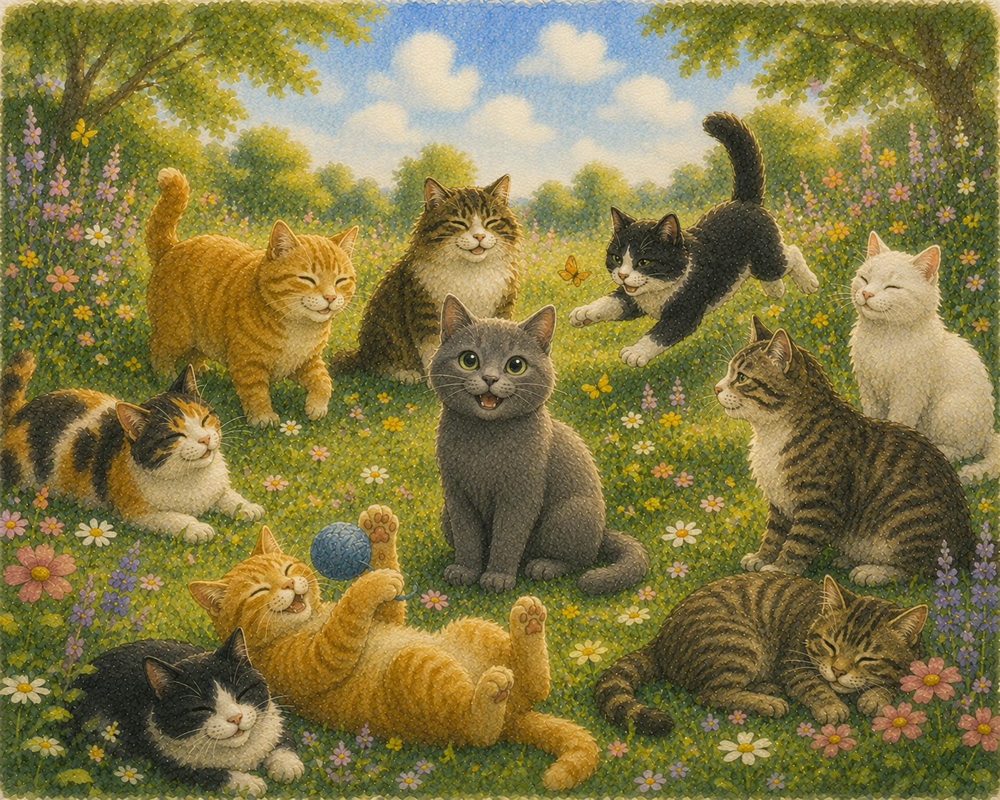
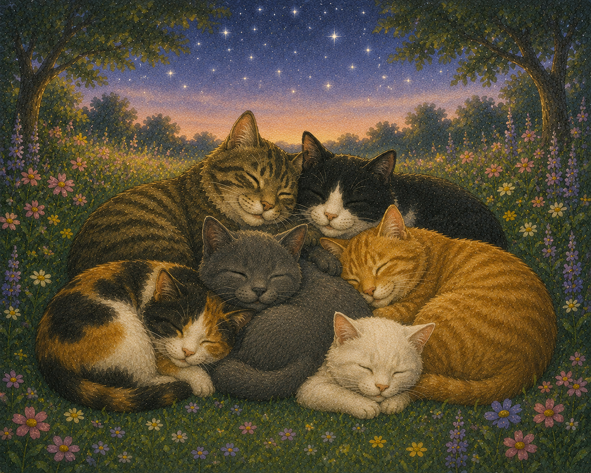

Once there was a little grey cat who had no meow.
Other cats called out 'Meooow!' across the garden, but the little grey cat stayed quiet.

It wasn’t shy. It wasn’t afraid.
The sound simply wouldn’t come.
So instead of playing with cats, the grey cat copied people.

It didn’t chase birds.
It didn’t hunt mice.
Dogs barked and wagged their tails.
The little grey cat just sighed.
'Dogs are silly. I don’t have time for that.'

At night, when the world was quiet, the grey cat felt a small ache inside.
'If I am not like other cats,' it wondered, 'then what am I?'

One morning, the grey cat wandered into a meadow.
There it found other cats.
One was loud and rolled in the grass.
One was shy, hiding behind a rock.
One was clumsy, tripping over its paws.
One just watched the clouds.

“These cats are all different… but they are still cats,” thought the little grey cat.
The other cats didn’t laugh.
They didn’t tell it to chase birds.
They simply made space.
'Come sit with us,' they purred.

The grey cat sat down.
For the first time, it didn’t feel so strange.
And then — 'Mee…' A tiny sound slipped out.

The grey cat still didn’t chase birds.
It still thought dogs were silly.
It still liked copying people.
But it also knew something important: It was a cat.
A different cat.
A cat with a voice of its own.

Even if someone is quiet or different, they still belong.
Everyone has their own voice — sometimes it just takes time to find it.
Something to think about
What does it mean to have a voice of your own?